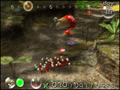
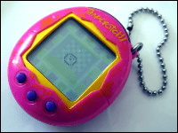
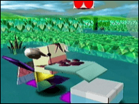
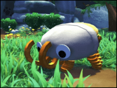

I strongly believe that my continuing interest in biology was greatly influenced by the kinds of games I played growing up. Time spent with games like Pikmin, Cubivore, and Petz nurtured a growing interest in the natural world and the diversity of life found in it. For that reason, I've compiled this list of games, many of which I have played, and others that have been recommended to me.
For an older list of virtual pets and similar things, check out Computer Critters.
Petz
PC (series)
Raise Dogz and Catz to adulthood, care for them and teach them tricks. Features a robust breeding system and modding community.
Nintendogs + Cats
Nintendo DS & Switch (series)
Raise puppies & kittens, play & teach tricks, take them on walks, and compete in agility and obedience competitions.
Creatures
PC & PS1 (series)
A simulation game with very robust AI, allowing you to raise, teach, and breed creatures called Norns, while exploring the world they live in.

The Sims: Pets
PC & Various Systems (series)
Create and raise human and animal families and develop their relationships.
Viva Piñata
XB360 & PC
Find, sell, breed, and raise various kinds of piñatas. Maintain a farm where they can grow.
Sonic (Chao Raising Minigame)
Various Systems (series)
Some Sonic games (notably Sonic Adventure 2) feature a minigame where you can raise creatures known as 'Chaos'.
Amazing Island
Gamecube
Create monsters by drawing them and collecting parts and accessories, and compete in minigames.
Magic Pengel
PS2
Create hand-drawn monsters to fight in competitions, and follow an interesting story.

Pikmin
Nintendo Systems (series)
Direct creatures called 'pikmin' to fight monsters and obtain treasure and resources on an alternate Earth.
Monster Hunter Stories
3DS
A departure from typical Monster Hunter series gameplay, Stories allows you to train, ride, and fight alongside monsters.

Tamagotchi
Handheld
A toy that lets you raise a digital pet, which can grow into many different forms depending on your care.
Shimeji
PC
Not a game, but a program that lets a character run around on your desktop. Many custom versions exist.
WolfQuest
PC
Wildlife simluation game that allows you to experience life as a wolf. Originally developed by the Minnesota Zoo as an educational tool.
Everblue
PS2 (series)
Take on the role of a scuba diver and explore marine environments while learning about their inhabitants.
Endless Ocean
Wii (series)
Relaxing, nonlinear scuba exploration game that allows you to learn about marine inhabitants. Spiritual successor to Everblue.
In Other Waters
PC, Switch
Text and UI-based exploration RPG with a story focused on speculative biology and sci-fi.

Cubivore
Gamecube
Eat other beasts and evolve into new forms to bring wilderness back to the world.

Bugsnax
Various Systems
Collect and photograph edible creatures known as 'Bugsnax' while solving a mystery.
Pokémon Snap
Nintendo Systems (series)
Photograph pokémon in natural settings, and solve environmental puzzles to take photos of unique events.
Untitled Goose Game
Various Systems
It's a lovely morning in the village, and you are a horrible goose.
Spore
PC & Handheld (series)
Guide a species through evolution from a single celled organism to a space-faring civilization.
Impossible Creatures
PC
A real time strategy game where you create animal hybrids to fight for you. Features a story mode.
Black & White
PC (series)
Take on the role of the god of a civilization and train a powerful creature to do your bidding.
Animal Crossing
Nintendo Systems (series)
Move into a town of animal villagers and live your life. Decorate your home, catch bugs and fish, make friends with villagers, and more.
Stardew Valley
Various Systems
Inherit a farm and grow craps, raise livestock, go fishing, form relationships, explore caves, fight monsters, and much more.
Flight Rising
Website
Breed & sell dragons with unique colors and patterns, play games, collect familiars, and participate in site-wide events.
Neopets
Website
Adopt and care for virtual pets. Dress them up, play games, earn points and change their appearance.